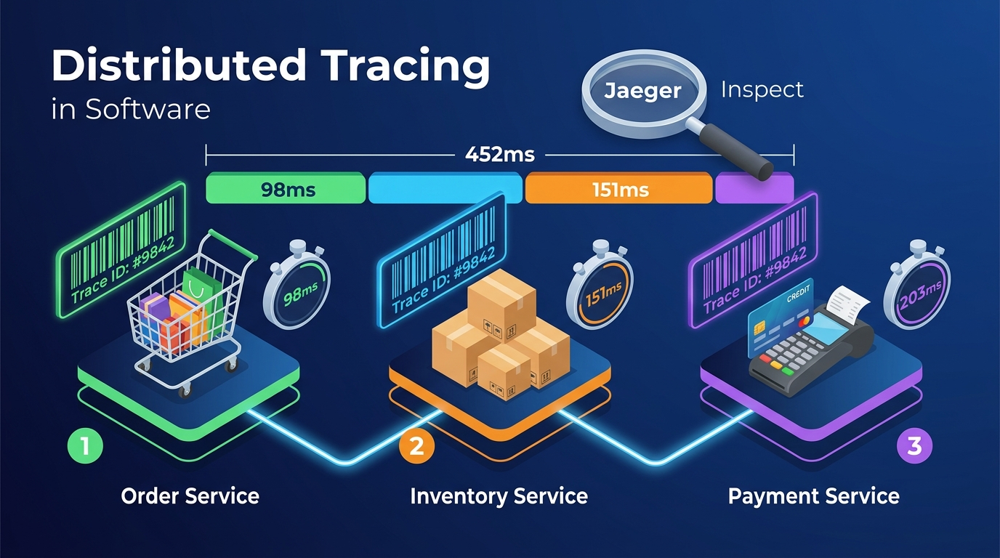
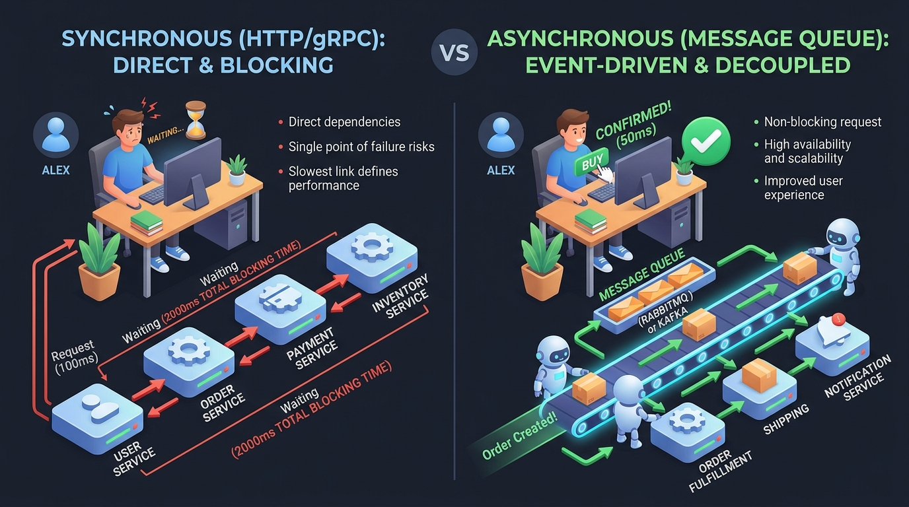
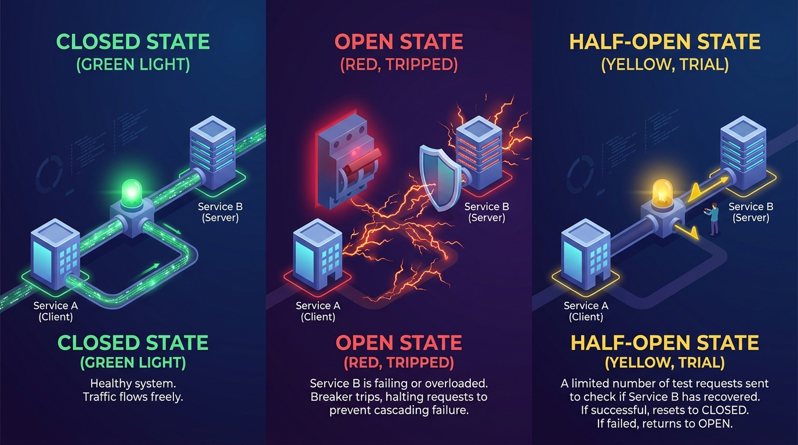
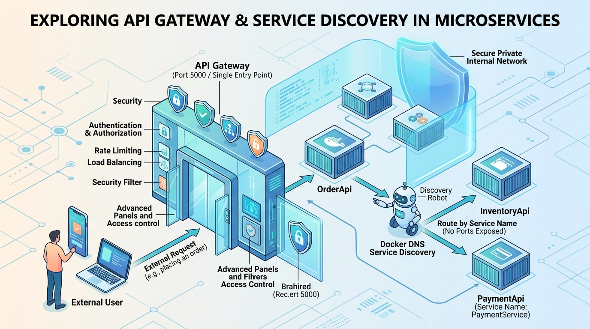
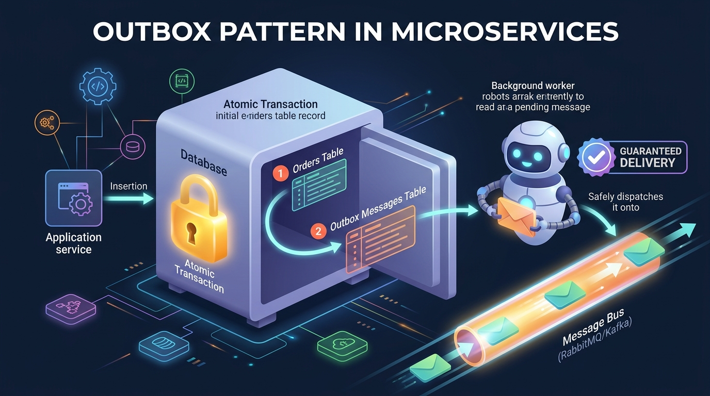
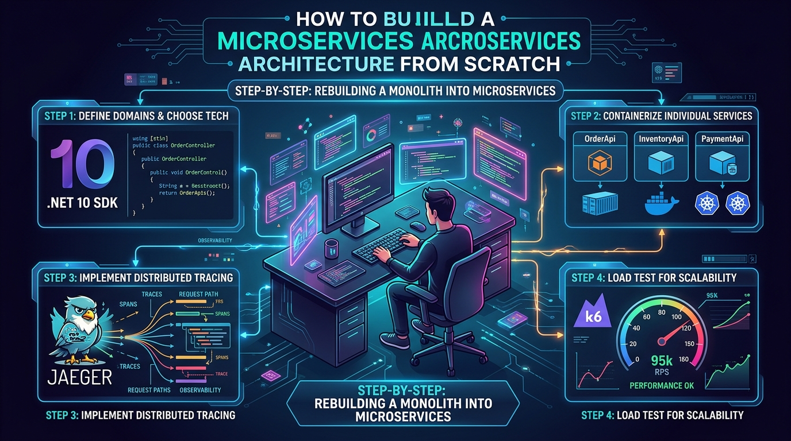

Aprenda Arquitetura de Microsserviços de Forma Simples
Chega de termos complicados sem explicação! Aqui você vai entender exatamente o que fizemos no nosso laboratório prático (.NET 10, Jaeger, OpenTelemetry, Polly, Docker e k6) usando problemas claros, analogias do dia a dia, tabelas passo a passo e simuladores visuais.
Problema ➜ Objetivo ➜ Exemplo do Dia a Dia ➜ Passo a Passo Detalhado ➜ Fluxograma ➜ O que fizemos no código.
Distributed Tracing & Jaeger (OpenTelemetry)
Como descobrir exatamente em qual serviço o sistema demorou ou falhou.
Imagine que um cliente clica em "Finalizar Compra" e a tela fica carregando por 10 segundos até dar erro. Em um sistema de microsserviços, a chamada passou por 4 ou 5 APIs diferentes (Pedidos, Estoque, Pagamento, Frete). Como você descobre quem demorou ou onde quebrou?
Sem Distributed Tracing, você teria que abrir os logs de 5 servidores diferentes, procurando linhas de texto perdidas no meio de milhões de clientes simultâneos!
Colocar uma "etiqueta única" (chamada Trace ID) logo na primeira requisição do cliente.
Conforme a requisição viaja de um serviço para o outro, essa mesma etiqueta é repassada no cabeçalho HTTP.
No final, ferramentas como o Jaeger mostram uma linha do tempo gráfica perfeita dizendo: "O Pedido levou 254ms no total: 98ms foram no Estoque e 151ms foram no Pagamento".

1. O Carrinho (Order Service): O cliente clica em comprar. O sistema carimba uma etiqueta digital
Trace ID: #9842.
2. As Caixas no Galpão (Inventory Service): A requisição vai até o estoque com a mesma etiqueta. O cronômetro mede 98ms.
3. A Maquininha de Cartão (Payment Service): A requisição passa pelo cartão mantendo a mesma etiqueta. O cronômetro mede 151ms.
4. A Lupa do Jaeger: O Jaeger junta todos os cronômetros e mostra na barra colorida: o pedido levou 254ms no total, e o pagamento foi o maior responsável pelo tempo gasto!
Exemplo do Dia a Dia: O Código de Rastreamento dos Correios
Quando você compra um tênis na internet, a loja te dá um código único de rastreio: BR123456789SP.
- Você não precisa ligar para o galpão de Curitiba, depois ligar para a transportadora de São Paulo, depois para o entregador da moto.
- Você simplesmente digita esse código no app e vê a linha do tempo completa:
🏪 Pedido postado (08:00) ➜ 🏭 Triagem no CD Cajamar (12:00) ➜ 🛵 Saiu para entrega (16:00) ➜ 🏠 Entregue (16:45)
- Distributed Tracing é exatamente isso: O
Trace IDé o código de rastreamento da encomenda, e cada parada (etapa) é umSpan!
Ideia Geral (Passo a Passo)
| Etapa | O que acontece | Por quê? |
|---|---|---|
| 1 | O usuário faz uma requisição HTTP para a OrderApi (ex: POST /order). |
É a porta de entrada onde a intenção de compra começa. |
| 2 | O OpenTelemetry gera automaticamente um identificador único (Trace ID: ex: 4bf92f3577b34da6a3ce929d0e0e4736). |
Ele garante que todas as etapas futuras tenham o mesmo identificador de rastreio pai. |
| 3 | A OrderApi chama a InventoryApi enviando esse Trace ID no cabeçalho traceparent (padrão W3C). |
Para que a segunda API saiba que não é uma chamada solta, e sim parte daquele mesmo pedido. |
| 4 | A InventoryApi mede seu próprio tempo de execução (~98ms) e cria um Span filho. |
Registra com precisão quanto tempo o estoque demorou para checar os itens. |
| 5 | A OrderApi em seguida chama a PaymentApi com o mesmo Trace ID, que cria outro Span filho (~151ms). |
Registra o tempo que a cobrança no cartão levou para aprovar. |
| 6 | Todas as APIs enviam seus dados em segundo plano via OTLP (gRPC porta 4317) para o servidor do Jaeger. | Para centralizar os dados sem deixar a requisição do usuário mais lenta. |
| 7 | O desenvolvedor abre o Jaeger UI (porta 16686) e vê a linha do tempo com gráfico de barras colorido. | Permite enxergar gargalos de performance e erros em segundos, com precisão cirúrgica. |
Fluxograma Ilustrativo: Como a Informação Navega no Tracing
Cria Span Raiz (Order) Order->>Inv: GET /inventory (Header: traceparent=4bf92f...) Note over Inv: Processa estoque (~98ms)
Cria Span Filho (Inventory) Inv-->>Order: 200 OK (Estoque Confirmado) Inv--)Jaeger: Envia Span via OTLP gRPC (4317) Order->>Pay: GET /payment (Header: traceparent=4bf92f...) Note over Pay: Processa cartão (~151ms)
Cria Span Filho (Payment) Pay-->>Order: 200 OK (Pagamento Aprovado) Pay--)Jaeger: Envia Span via OTLP gRPC (4317) Order-->>Cliente: 200 OK { status: "Order Processed" } Order--)Jaeger: Envia Span Raiz via OTLP gRPC (4317) Note over Jaeger: Monta árvore visual completa
Tempo Total: ~254ms
// 1. Configuração do OpenTelemetry com Tracing automático
builder.Services.AddOpenTelemetry()
.ConfigureResource(resource => resource.AddService("orderapi"))
.WithTracing(tracing =>
{
tracing
.AddAspNetCoreInstrumentation() // Captura requisições que chegam
.AddHttpClientInstrumentation() // Captura chamadas feitas para Inventory e Payment
.AddOtlpExporter(options =>
{
// Envia para o Jaeger na porta 4317 usando protocolo gRPC
options.Endpoint = new Uri("http://jaeger:4317");
});
});AddAspNetCoreInstrumentation(): Sempre que alguém chama a OrderApi, ela liga o cronômetro automaticamente.AddHttpClientInstrumentation(): Quando a OrderApi usaHttpClientpara chamar o Estoque ou Pagamento, ela injeta oTrace IDno cabeçalho sem você precisar fazer nada na mão!AddOtlpExporter(): Envia os pacotes de telemetria diretamente para o container do Jaeger.
👁️ Visualização Real do Trace que Testamos no Jaeger
Verificado no Docker Compose💡 Olhando essa barra, qualquer estagiário ou diretor sabe responder: "Onde o sistema gasta mais tempo?" Resposta: Na PaymentApi (151ms)!
Comunicação: Síncrona (HTTP/gRPC) vs Assíncrona (Mensageria)
Quando você deve esperar a resposta na hora e quando deve apenas mandar uma mensagem e seguir em frente.
Se a cada clique do usuário sua API precisa chamar: 1. Estoque (espera 100ms) + 2. Pagamento (espera 150ms) + 3. Nota Fiscal (espera 500ms) + 4. Disparo de E-mail (espera 800ms) + 5. Notificação Push no celular (espera 400ms)...
O tempo total passa de 2 segundos! E o pior: se o servidor de e-mail estiver fora do ar, a compra inteira falha mesmo que o cartão já tenha sido cobrado!
Dividir a comunicação em duas categorias inteligentes:
- Síncrona: Usar apenas para o que o usuário precisa saber imediatamente para continuar (ex: saldo suficiente no cartão).
- Assíncrona: Usar filas (RabbitMQ, Kafka, SQS) para tudo que pode acontecer nos próximos segundos sem travar a tela (ex: gerar nota fiscal, enviar e-mail de obrigado).

• Lado Esquerdo (Síncrono / HTTP): O usuário Alex fica preso olhando para a ampulheta. Cada serviço (User ➜ Order ➜ Payment ➜ Inventory) precisa responder em fila indiana. Tempo total de espera: 2000ms travados! Se um falhar, a compra inteira cai.
• Lado Direito (Assíncrono / Mensageria): O usuário clica em "Comprar" e recebe confirmação verde em apenas 50ms! A mensagem cai na esteira (RabbitMQ / Kafka) e robôs trabalhadores cuidam da separação e envio em segundo plano.
Exemplo do Dia a Dia: Ligação Telefônica vs Mensagem no WhatsApp
📞 Síncrono = Ligação Telefônica
Você liga para alguém. Você fala "Alô", e precisa que a pessoa esteja com o telefone no ouvido respondendo "Alô" naquele exato instante.
💬 Assíncrono = Mensagem no WhatsApp
Você envia: "Segue o comprovante de pagamento". Você não fica olhando para a tela esperando a pessoa ler.
Comparativo Passo a Passo: Quando Usar Cada Uma
| Tipo | Como Funciona | Vantagens | Quando Usar? |
|---|---|---|---|
| Síncrono (HTTP / gRPC) | O serviço A chama o serviço B e fica travado esperando a resposta antes de prosseguir. | Simples de entender; resposta imediata para o usuário. | Consultas em tempo real (ex: checar login, validar senha, consultar saldo). |
| Assíncrono (Mensageria / Eventos) | O serviço A publica uma mensagem em uma fila (RabbitMQ/Kafka) e continua sua vida imediatamente. | Altíssimo desempenho; se o serviço de destino cair, a mensagem fica guardada na fila e não se perde. | Processamento de pedidos, envio de e-mails, emissão de nota fiscal, geração de relatórios. |
Fluxograma: Comparando o Bloqueio Síncrono vs Desacoplamento Assíncrono
Circuit Breaker (Disjuntor) com Polly
Como evitar que a queda de um serviço derrube o sistema inteiro em cascata.
Imagine que a PaymentApi caiu ou começou a demorar 30 segundos para responder.
Se 500 pessoas tentarem comprar na mesma hora, a OrderApi vai abrir 500 conexões HTTP simultâneas que ficam travadas esperando.
A memória e o pool de conexões da OrderApi se esgotam. Resultado: a OrderApi também cai, derrubando o login, o carrinho e tudo mais. Uma falha pequena vira uma catástrofe global!
Instalar um "disjuntor inteligente" (usando a biblioteca Polly no .NET).
Se a PaymentApi falhar 3 vezes seguidas, o disjuntor "desarma" (Open). As próximas chamadas nem saem da máquina: elas falham instantaneamente em 0 milissegundos com uma mensagem amigável, poupando recursos até o serviço se recuperar.

• 1. CLOSED STATE (Luz Verde): O sistema está saudável. O tráfego elétrico flui livremente do Serviço A para o Serviço B.
• 2. OPEN STATE (Chave Vermelha Desarmada): O Serviço B começou a falhar ou pegar fogo. O disjuntor desarma na hora e coloca um escudo de proteção, bloqueando chamadas em 0ms para não queimar o cliente!
• 3. HALF-OPEN STATE (Luz Amarela de Teste): Após um tempo de descanso (cooldown), o disjuntor deixa passar um único pulso cauteloso. Se o serviço responder bem, a chave volta para o verde; se falhar, volta para o vermelho!
Exemplo do Dia a Dia: O Disjuntor da Caixa de Luz da Sua Casa
Na parede da sua casa tem uma caixinha com vários disjuntores.
- Se você ligar o chuveiro, a air fryer e o ferro de passar na mesma tomada e houver uma sobrecarga elétrica, o disjuntor faz "CLACK!" e desliga a energia daquele cômodo na hora.
- Por que ele faz isso? Para impedir que os fios dentro da parede esquentem até pegar fogo e queimar a casa inteira!
- Em software, o Circuit Breaker faz exatamente isso: ele "desarma" a conexão com o serviço doente para não deixar o servidor inteiro queimar por falta de memória!
Os 3 Estados do Circuit Breaker (Passo a Passo)
| Estado | O que acontece | Por quê? |
|---|---|---|
| 🟢 FECHADO (Closed) | Tudo está funcionando normalmente. As requisições passam livremente. | O serviço de destino está saudável e respondendo dentro do tempo esperado. |
| 🔴 ABERTO (Open) | O disjuntor detectou muitas falhas (ex: 3 consecutivas). Nenhuma requisição passa! Elas falham de imediato sem sequer tentar chamar a rede. | Para não estressar o serviço que já está caído e evitar que a sua própria API fique com conexões presas na memória. |
| 🟡 MEIO-ABERTO (Half-Open) | Depois de um tempo de espera (ex: 30 segundos), o disjuntor deixa passar apenas uma requisição de teste. | Para conferir se o serviço já voltou à vida. Se essa requisição tiver sucesso, o disjuntor volta para 🟢 FECHADO. Se falhar, ele volta para 🔴 ABERTO por mais 30s. |
Máquina de Estados do Circuit Breaker
// Adiciona política de Circuit Breaker ao HttpClient do Pedido
builder.Services.AddHttpClient("payment-client", client =>
{
client.BaseAddress = new Uri("http://paymentapi:8080");
})
.AddTransientHttpErrorPolicy(policy =>
policy.CircuitBreakerAsync(
handledEventsAllowedBeforeBreaking: 3, // Se falhar 3 vezes seguidas...
durationOfBreak: TimeSpan.FromSeconds(30), // ...fica ABERTO por 30 segundos
onBreak: (outcome, timespan) => Console.WriteLine("⚠️ Disjuntor DESARMOU! Bloqueando chamadas."),
onReset: () => Console.WriteLine("✅ Disjuntor FECHOU! Serviço voltou ao normal.")
)
);API Gateway (Microsoft YARP) & Service Discovery (Docker DNS)
Como organizar a porta de entrada única com YARP e como os microsserviços se encontram dinamicamente sem IPs fixos.
GatewayApi usando o Microsoft YARP (Yet Another Reverse Proxy), trancamos as portas das APIs internas na rede privada do Docker e configuramos o rastreamento distribuído no Jaeger com o Gateway como nó raiz.
Imagine que você tem 10 microsserviços rodando na nuvem. Se cada um expuser sua própria porta para a internet:
- O aplicativo do cliente no celular precisaria saber 10 endereços e portas diferentes (ex: 5000, 5001, 5002...).
- Risco grave de segurança: Qualquer hacker ou usuário mal-intencionado pode chamar diretamente a
PaymentApiou aInventoryApi, pulando validações de login e regras de negócio! - O caos do IP dinâmico: Toda vez que um contêiner reinicia no Docker ou no Kubernetes, ele ganha um IP diferente (ex:
172.18.0.5hoje,172.18.0.9amanhã). Se colocássemos IPs fixos no código C#, a aplicação quebraria no primeiro reinício!
Resolvemos esses problemas dividindo as responsabilidades em duas peças mestras:
- 1. API Gateway (Microsoft YARP na porta 5000): Uma portaria única e blindada. O mundo exterior só conhece a porta 5000. Todas as outras APIs internas têm suas portas trancadas dentro de uma rede privada. O Gateway recebe a requisição, gera o trace, e roteia para o serviço certo internamente.
- 2. Service Discovery (DNS interno do Docker): Os serviços conversam usando nomes lógicos amigáveis (ex:
http://inventoryapi:8080ehttp://paymentapi:8080). O servidor DNS do Docker intercepta o nome e resolve dinamicamente o IP do container em milissegundos!

1. 📱 O Cliente Externo (Mobile/Web): Só conhece uma única porta:
http://localhost:5000. Ele nunca fala direto com o banco, estoque ou pagamento.
2. 🚪 O API Gateway (Microsoft YARP): Fica na portaria da fortaleza. Ele valida cabeçalhos, inicia o
Trace ID no OpenTelemetry e sabe exatamente para onde direcionar cada rota (ex: /order ➜ orderapi).
3. 🛡️ Escudo da Rede Privada Docker: As portas das APIs internas (5001 e 5002) foram totalmente removidas do docker-compose. Ninguém de fora da máquina consegue acessá-las diretamente!
4. 🤖 Robô de Service Discovery (Docker DNS): Quando a
OrderApi precisa falar com a InventoryApi, ela não sabe o IP. Ela pergunta para o robô DNS: "Cadê o container inventoryapi?", e o Docker responde com o IP correto na hora!
Exemplo do Dia a Dia: A Portaria do Condomínio Fechado & A Agenda do Celular
🏢 API Gateway = Portaria de Condomínio Fechado
Imagine um condomínio residencial de luxo com 100 casas. As casas não têm portão aberto direto para a rua movimentada.
Existe uma guarita única na entrada com cancela e segurança armada. O entregador do iFood chega na guarita:
- O segurança confere o documento (Autenticação).
- Anota o horário de entrada no livro (Logs e Distributed Tracing).
- Diz: "Pode entrar e levar até a casa número 14" (Roteamento Reverso).
📖 Service Discovery = Agenda de Contatos do WhatsApp
Você decora o número de telefone de 8 dígitos de todos os seus amigos? Com certeza não!
No seu celular, você abre a agenda e clica no contato "Mãe":
- Se a sua mãe trocar de operadora ou mudar de número amanhã, você só atualiza a agenda. Você continua clicando em "Mãe".
- O telefone consulta a agenda e disca para o número atualizado sem você precisar saber.
1. O que JÁ implementamos de Service Discovery no nosso laboratório?
Implementamos o modelo de DNS-based Service Discovery — exatamente o mesmo princípio que o Kubernetes CoreDNS usa em produção nas maiores empresas do mundo!
No nosso docker-compose.yml, repare como a OrderApi chama os outros serviços através de variáveis de ambiente:
# Variáveis passadas para a OrderApi no docker-compose.yml
- InventoryApiUrl=http://inventoryapi:8080
- PaymentApiUrl=http://paymentapi:8080• A
OrderApi não possui nenhum IP fixo gravado no código C#.
• Quando ela executa
await httpClient.GetAsync("http://inventoryapi:8080/inventory"), a placa de rede virtual do Docker intercepta o nome inventoryapi.
• O servidor DNS embutido na rede
bridge do Docker consulta sua tabela dinâmica interna, descobre que o container inventoryapi recebeu o IP 172.18.0.3, e entrega a conexão transparente.
• Por que não usamos HashiCorp Consul ou Netflix Eureka aqui? Porque em ambientes conteinerizados modernos (Docker / Kubernetes), o DNS nativo da infraestrutura já resolve 100% da descoberta de serviços sem precisar de servidores extras complexos!
2. Por que o API Gateway NÃO estava implementado antes e o que fizemos agora?
Na versão inicial do nosso laboratório, as portas dos microsserviços estavam escancaradas no docker-compose.yml:
OrderApi: porta 5000 exposta para o seu PC.InventoryApi: porta 5001 exposta para o seu PC.PaymentApi: porta 5002 exposta para o seu PC.
Isso significava que qualquer pessoa podia acessar http://localhost:5002/payment direto no navegador!
1. Criamos o microsserviço GatewayApi usando a biblioteca oficial da Microsoft YARP (Yet Another Reverse Proxy).
2. Configuramos o YARP para ouvir na porta 5000 e rotear internamente: qualquer requisição para
/order é encaminhada automaticamente para http://orderapi:8080.
3. Fechamos e deletamos as portas externas da
orderapi, inventoryapi e paymentapi no docker-compose.yml! Elas agora operam 100% isoladas na rede interna do Docker.
4. Plugamos o OpenTelemetry no Gateway! Agora, quando você abre o Jaeger, o
gatewayapi aparece orgulhosamente como o primeiro nó (Root Span) de toda a cadeia de execução!
Comparativo Arquitetural: Antes vs Depois da Implementação
| Aspecto | Antes (Sem API Gateway) | Depois (Com YARP API Gateway) |
|---|---|---|
| Portas Expostas | ❌ Inseguro Portas 5000, 5001 e 5002 abertas direto no Windows. | ✅ Seguro Apenas a porta 5000 (Gateway). APIs internas sem nenhuma porta pública! |
| Ponto de Entrada | O cliente chamava a OrderApi diretamente. |
O cliente só fala com o GatewayApi, que distribui o tráfego. |
| Segurança de Pagamento | Qualquer um podia chamar localhost:5002/payment e forjar pagamentos. |
Se você tentar chamar localhost:5002, a conexão é recusada imediatamente! |
| Rastreamento Jaeger | O Trace começava na OrderApi (3 serviços no grafo). |
O Trace começa no gatewayapi (4 serviços encadeados: Gateway ➜ Order ➜ Inventory & Payment). |
| Service Discovery | Apenas entre OrderApi ➜ Inventory/Payment via Docker DNS. |
Completo: Gateway descobre OrderApi via DNS, e ela descobre os outros serviços. |
Passo a Passo Completo: Da Requisição do Cliente até a Resposta Final
| Etapa | O que acontece | Por quê? |
|---|---|---|
| 1 | O cliente (navegador, app ou k6) faz uma requisição HTTP POST http://localhost:5000/order. |
O cliente só conhece um único ponto de contato público centralizado (o API Gateway). |
| 2 | O GatewayApi (YARP) recebe a chamada. O OpenTelemetry gera um novo TraceId raiz e inicia o primeiro cronômetro (Span raiz). |
Permite medir o tempo total percebido pelo usuário final no Jaeger e rastrear a requisição de ponta a ponta. |
| 3 | O YARP consulta sua tabela de rotas no appsettings.json, identifica que /order pertence ao cluster order-cluster e reencaminha a requisição para http://orderapi:8080. |
O proxy reverso encaminha o tráfego de forma assíncrona com altíssima performance e sem travar threads. |
| 4 | O YARP injeta o cabeçalho padrão traceparent no HttpClient antes de enviar para a OrderApi. |
Garante que a OrderApi continue o mesmo trace sem perder o histórico do Gateway. |
| 5 | A OrderApi recebe o pedido e precisa checar estoque. Ela chama http://inventoryapi:8080/inventory. |
A OrderApi não tem nenhum IP fixo; ela usa o nome lógico definido no Service Discovery. |
| 6 | O Docker DNS embutido intercepta a chamada para inventoryapi, consulta sua tabela interna e entrega o IP privado do container. |
Isso é o Service Discovery baseado em DNS: se o container reiniciar com outro IP, o Docker atualiza na hora sem quebrar a API! |
| 7 | A OrderApi repete o processo chamando http://paymentapi:8080/payment, processa o pedido e responde 200 OK para o Gateway, que devolve o JSON final ao cliente. |
O ciclo é concluído com sucesso, segurança de 100% e rastreabilidade total no Jaeger! |
Fluxograma Arquitetural da Solução com YARP e Rede Privada
using OpenTelemetry.Resources;
using OpenTelemetry.Trace;
var builder = WebApplication.CreateBuilder(args);
// 1. Configura o YARP Reverse Proxy lendo a seção "ReverseProxy" do appsettings.json
builder.Services.AddReverseProxy()
.LoadFromConfig(builder.Configuration.GetSection("ReverseProxy"));
// 2. Instrumenta o OpenTelemetry para o Gateway ser o Root Span no Jaeger
builder.Services.AddOpenTelemetry()
.ConfigureResource(resource => resource.AddService("gatewayapi"))
.WithTracing(tracing =>
{
tracing
.AddAspNetCoreInstrumentation() // Captura requisições de entrada na porta 5000
.AddHttpClientInstrumentation() // Propaga o W3C traceparent para a OrderApi
.AddOtlpExporter(opt =>
{
opt.Endpoint = new Uri(Environment.GetEnvironmentVariable("OTEL_EXPORTER_OTLP_ENDPOINT") ?? "http://jaeger:4317");
});
});
var app = builder.Build();
// Endpoint de saúde do próprio Gateway
app.MapGet("/gateway/health", () => Results.Ok(new
{
status = "Healthy",
gateway = "YARP (Yet Another Reverse Proxy)",
role = "Single Entry Point"
}));
// 3. Ativa o pipeline de roteamento reverso do YARP
app.MapReverseProxy();
app.Run();{
"Logging": {
"LogLevel": {
"Default": "Information",
"Microsoft.AspNetCore": "Warning",
"Yarp": "Information"
}
},
"ReverseProxy": {
"Routes": {
"order-route": {
"ClusterId": "order-cluster",
"Match": {
"Path": "/order/{**catch-all}"
}
},
"order-exact-route": {
"ClusterId": "order-cluster",
"Match": {
"Path": "/order"
}
}
},
"Clusters": {
"order-cluster": {
"Destinations": {
"order-service": {
"Address": "http://orderapi:8080"
}
}
}
}
}
}services:
# O ÚNICO SERVIÇO COM PORTA PÚBLICA EXPOSTA PARA O CLIENTE
gatewayapi:
build:
context: ./GatewayApi
dockerfile: Dockerfile
container_name: gatewayapi
ports:
- "5000:8080" # Apenas a porta 5000 do Gateway fica aberta!
environment:
- OTEL_EXPORTER_OTLP_ENDPOINT=http://jaeger:4317
- OTEL_EXPORTER_OTLP_PROTOCOL=grpc
depends_on:
- jaeger
- orderapi
# TODAS AS OUTRAS APIS NÃO TÊM MAIS "ports:" EXPOSTAS NO HOST!
orderapi:
build:
context: ./OrderApi
dockerfile: Dockerfile
container_name: orderapi
# portas 5000:8080 foram REMOVIDAS do host para segurança!
environment:
- InventoryApiUrl=http://inventoryapi:8080 # Service Discovery via Docker DNS
- PaymentApiUrl=http://paymentapi:8080 # Service Discovery via Docker DNS
- OTEL_EXPORTER_OTLP_ENDPOINT=http://jaeger:4317
depends_on:
- jaeger
- inventoryapi
- paymentapi
inventoryapi:
build:
context: ./InventoryApi
dockerfile: Dockerfile
container_name: inventoryapi
# porta 5001 REMOVIDA do host!
environment:
- OTEL_EXPORTER_OTLP_ENDPOINT=http://jaeger:4317
paymentapi:
build:
context: ./PaymentApi
dockerfile: Dockerfile
container_name: paymentapi
# porta 5002 REMOVIDA do host!
environment:
- OTEL_EXPORTER_OTLP_ENDPOINT=http://jaeger:4317Teste você mesmo no seu computador agora!
Você pode testar exatamente essa segurança no terminal do seu Windows (PowerShell):
Saga Pattern: Transações Distribuídas
Como cancelar e desfazer etapas anteriores quando algo dá errado no meio do caminho.
No banco de dados tradicional, se algo der errado você faz ROLLBACK e tudo volta como era antes.
Mas em microsserviços, cada serviço tem o seu próprio banco de dados isolado!
Se você reservou o item no banco do Estoque, mas 5 segundos depois o banco do Cartão de Crédito recusou a compra, o item ficou preso no estoque para sempre! Como devolver o estoque se os bancos são separados?
Implementar uma Saga: uma sequência de transações locais onde cada passo tem uma Ação de Compensação correspondente (o "desfazer").
Se a etapa 3 falhar, a Saga dispara os comandos reversos da etapa 2 e da etapa 1: "Devolver os 2 sapatos ao estoque" e "Marcar o pedido como cancelado".
Exemplo do Dia a Dia: Reserva de Pacote de Viagem (Passagem + Hotel + Carro)
Você entra numa agência para comprar um pacote para Paris com 3 itens:
- A agência reserva a Passagem Aérea (Sucesso!).
- A agência reserva o Hotel (Sucesso!).
- A agência tenta reservar o Aluguel do Carro (Ops! Não tem mais carros disponíveis!).
As Duas Formas de Fazer Saga: Orquestração vs Coreografia
| Modelo | Como Funciona | Analogia | Vantagem |
|---|---|---|---|
| Orquestração (Recomendada) | Existe um serviço central (o "Orquestrador") que manda mensagens dizendo exatamente quem deve agir a cada passo. | 🎼 O Maestro da Orquestra: Ele aponta para o violino, depois para o piano. Se o piano errar, o maestro manda o violino parar. | Fácil de monitorar e entender onde o fluxo parou. |
| Coreografia | Não tem chefe central. Cada serviço faz seu trabalho e joga um evento na fila; o próximo serviço escuta e reage por conta própria. | 💃 Dança em Roda: Cada dançarino só faz o seu passo ao ver o movimento do parceiro do lado. | Totalmente descentralizado, ótimo para fluxos muito simples com 2 etapas. |
Fluxograma: Saga Orquestrada com Falha e Compensação
Outbox Pattern: Consistência Banco + Mensageria
Como ter certeza absoluta de que um evento foi publicado se o banco salvou o dado.
Imagine o seguinte código comum:
1. _banco.Pedidos.Add(pedido); await _banco.SaveChangesAsync();
2. await _rabbitMq.PublicarMensagemAsync("PedidoCriado");
E se o banco salvar, mas o servidor reiniciar exatamente entre a linha 1 e a linha 2? O pedido foi salvo, mas a mensagem nunca foi enviada! O estoque nunca vai saber que precisa separar o produto!
Criar uma tabela chamada Outbox dentro do mesmo banco de dados do serviço.
Quando salvamos o pedido, gravamos a mensagem na tabela Outbox dentro da MESMA transação atômica do banco. Depois, um processo em segundo plano (Background Worker) lê a tabela e despacha as mensagens com segurança garantida.

• O Cofre com Cadeado Dourado (Transação Atômica): A API grava no banco de dados duas tabelas juntas:
1. Tabela de Pedidos e 2. Tabela de Mensagens Outbox. Ou ambas são salvas juntas, ou nenhuma é salva! Zero chance de inconsistência.
• O Robô Trabalhador em Background: Um worker dedicado lê as mensagens pendentes na tabela Outbox e as despacha em segurança para a esteira (RabbitMQ/Kafka).
• Selo de Entrega Garantida: Somente após o RabbitMQ confirmar o recebimento, o robô atualiza o registro como "Processado".
Exemplo do Dia a Dia: A Caixa de Saída de Cartas do Escritório
Em um escritório de advocacia, quando o advogado termina de escrever uma notificação importante:
- Ele não larga a mesa de trabalho e sai correndo até a agência dos Correios no meio da chuva.
- Ele simplesmente coloca a carta na bandeja etiquetada: "Caixa de Saída" (Outbox) em cima da mesa.
- Duas vezes por dia, o carteiro do prédio passa na mesa, recolhe todas as cartas que estão na caixa de saída e leva para os Correios despachar.
- Se chover forte de manhã, as cartas não se perdem: continuam guardadas com segurança na bandeja até o carteiro passar!
Ideia Geral (Passo a Passo)
| Etapa | O que acontece | Por quê? |
|---|---|---|
| 1 | A OrderApi abre uma transação no banco de dados (BEGIN TRANSACTION). |
Garante que ou tudo é salvo junto, ou nada é salvo (Atomicidade). |
| 2 | Salva a linha na tabela Pedidos. |
Grava os dados comerciais do cliente. |
| 3 | Salva uma linha na tabela OutboxMessages com o conteúdo do evento (ex: { Evento: 'PedidoCriado', Status: 'Pendente' }). |
Como está na mesma transação, se a luz acabar aqui, o pedido e a mensagem são desfeitos juntos. Não há risco de inconsistência! |
| 4 | Faz o COMMIT TRANSACTION. |
Os dois registros agora estão gravados em disco de forma definitiva. |
| 5 | Um BackgroundService (Worker) roda a cada 2 segundos, lê as mensagens pendentes da tabela OutboxMessages e publica no RabbitMQ/Kafka. |
Desacopla a publicação de rede da requisição do cliente. |
| 6 | Assim que o RabbitMQ confirma o recebimento, o Worker marca a linha como Status: 'Processado'. |
Garante que a mensagem não seja enviada novamente. |
Fluxograma Ilustrativo: Como o Outbox Pattern Garante a Entrega
Testes de Carga com k6 & Diagnóstico de Gargalos
Como testar se o sistema aguenta o tráfego real e encontrar os pontos lentos usando o Jaeger.
No computador do desenvolvedor, testar 1 clique na API parece super rápido ("na minha máquina funciona!"). Mas no dia do lançamento, 5.000 clientes entram ao mesmo tempo.
Sem testes de carga prévios, o servidor atinge 100% de CPU, o banco entra em deadlock e a loja perde milhões de reais em vendas ao vivo.
Usar a ferramenta k6 para simular dezenas de usuários virtuais simultâneos (VUs) fazendo pedidos sem parar por 30 segundos.
Ao mesmo tempo em que a carga bate nas APIs, abrimos o Jaeger para cruzar os dados e responder cientificamente: "Quantas requisições por segundo aguentamos?" e "Qual serviço foi o vilão da lentidão?"
Exemplo do Dia a Dia: O Teste de Carga de Peso em uma Nova Ponte
Antes de liberar uma grande ponte estaiada para a população:
- Os engenheiros colocam 40 caminhões pesados carregados de areia parados em cima da pista ao mesmo tempo.
- Sensores medem o quanto os cabos de aço esticam e se há vibrações perigosas.
- O k6 é o caminhão de areia do software: Ele força o limite máximo do sistema em um ambiente controlado para garantir que a ponte não caia na hora do rush!
Ideia Geral (Passo a Passo do que Executamos no Lab)
| Etapa | O que acontece | Por quê? |
|---|---|---|
| 1 | Criamos o script loadtest.js configurando 10 Usuários Virtuais (vus: 10) rodando por 30 segundos (duration: '30s'). |
Define o volume de estresse que queremos aplicar de forma padronizada. |
| 2 | Executamos o k6 apontando para http://host.docker.internal:5000/order. |
Gera um bombardeio de requisições reais contra a nossa OrderApi no Docker. |
| 3 | A OrderApi processa cada pedido chamando a InventoryApi (100ms) e a PaymentApi (150ms). |
Simula o comportamento de microsserviços reais com regras de negócio e processamento de banco. |
| 4 | O OpenTelemetry gera milhares de Spans e envia via gRPC para o Jaeger. | Alimenta o Jaeger com métricas reais de cada uma das centenas de requisições feitas. |
| 5 | O k6 encerra e imprime na tela: http_req_duration: p(95)=270ms e http_req_failed: 0.00%. |
Mede se o sistema manteve estabilidade e zero erros sob estresse contínuo. |
| 6 | Abrimos o Jaeger na porta 16686 e inspecionamos os traces gerados durante a carga. | Confirma visualmente a saúde do fluxo e prova que o gargalo foi o tempo simulado do pagamento (150ms). |
import http from 'k6/http';
import { check, sleep } from 'k6';
export const options = {
vus: 10, // 10 usuários simultâneos
duration: '30s', // Durante 30 segundos ininterruptos
};
export default function () {
// Dispara POST para o endpoint que orquestra os 3 microsserviços
const res = http.post('http://host.docker.internal:5000/order');
// Valida se o status retornado foi 200 OK
check(res, {
'status is 200': (r) => r.status === 200,
});
sleep(0.1); // Pequena pausa entre pedidos
}Tutorial Passo a Passo: Como Criar Tudo do Zero
O guia definitivo com todos os comandos de terminal, códigos C# no .NET 10, Dockerfiles e docker-compose.yml que usamos para construir este laboratório.

• Passo 1 (.NET 10 SDK): Criamos as APIs minimalistas em C# com arquitetura leve e rápida.
• Passo 2 (Docker Containerization): Empacotamos OrderApi, InventoryApi e PaymentApi em imagens multi-stage isoladas.
• Passo 3 (Jaeger OpenTelemetry): Conectamos a telemetria ponta a ponta na porta gRPC 4317 do Jaeger.
• Passo 4 (k6 Load Testing): Simulamos tráfego real com usuários virtuais simultâneos e validamos a resiliência no velocímetro de performance!
Roteiro Geral da Construção (Passo a Passo)
| Etapa | O que fazer (Comando / Arquivo) | Por quê? |
|---|---|---|
| 1 | Criar a pasta e a solução com dotnet new sln -n DistributedTracingDemo. |
Centraliza os 3 projetos em uma única solução para fácil compilação. |
| 2 | Criar as 3 APIs com dotnet new web -n OrderApi, InventoryApi e PaymentApi. |
O template web gera Minimal APIs limpas, sem controllers pesados. |
| 3 | Instalar os pacotes do OpenTelemetry e Microsoft.Extensions.Http.Polly via dotnet add package. |
Habilita o rastreamento automático distribuído e a proteção contra quedas (disjuntor). |
| 4 | Escrever o Program.cs de cada microsserviço configurando a porta OTLP 4317. |
Define os endpoints de negócio e conecta o envio de telemetria ao Jaeger. |
| 5 | Criar os Dockerfile multi-stage baseados no .NET 10 SDK e ASP.NET 10.0 runtime. |
Permite que as APIs rodem em containers leves e idênticos em qualquer máquina. |
| 6 | Criar o docker-compose.yml unindo as 3 APIs e o container jaegertracing/all-in-one. |
Sobe o cluster inteiro e a rede interna de Service Discovery com apenas um comando. |
| 7 | Disparar carga com o container grafana/k6 e abrir o Jaeger na porta 16686. |
Gera tráfego real e visualiza os spans coloridos confirmando o funcionamento perfeito! |
1. Criando a Estrutura de Pastas e Projetos no Terminal
Abra seu terminal (PowerShell ou Bash) na pasta onde deseja criar o projeto e execute:
2. Instalando as Bibliotecas do OpenTelemetry e Polly
Instale os pacotes que ligam o cronômetro automático do tracing e o disjuntor de segurança:
3. Programando a InventoryApi (InventoryApi/Program.cs)
A InventoryApi simula a verificação de estoque com um delay de 100ms e exporta seus dados para o Jaeger:
using OpenTelemetry.Resources;
using OpenTelemetry.Trace;
var builder = WebApplication.CreateBuilder(args);
// Configura OpenTelemetry Tracing
builder.Services.AddOpenTelemetry()
.ConfigureResource(r => r.AddService("inventoryapi"))
.WithTracing(tracing =>
{
tracing
.AddAspNetCoreInstrumentation()
.AddOtlpExporter(opt => opt.Endpoint = new Uri("http://jaeger:4317"));
});
var app = builder.Build();
// Endpoint de Estoque com delay simulado de 100ms
app.MapGet("/inventory", async () =>
{
await Task.Delay(100);
return Results.Ok(new { status = "In Stock", checkedAt = DateTime.UtcNow });
});
app.Run();4. Programando a PaymentApi (PaymentApi/Program.cs)
A PaymentApi simula o processamento do cartão de crédito com um delay de 150ms:
using OpenTelemetry.Resources;
using OpenTelemetry.Trace;
var builder = WebApplication.CreateBuilder(args);
builder.Services.AddOpenTelemetry()
.ConfigureResource(r => r.AddService("paymentapi"))
.WithTracing(tracing =>
{
tracing
.AddAspNetCoreInstrumentation()
.AddOtlpExporter(opt => opt.Endpoint = new Uri("http://jaeger:4317"));
});
var app = builder.Build();
// Endpoint de Pagamento com delay simulado de 150ms
app.MapGet("/payment", async () =>
{
await Task.Delay(150);
return Results.Ok(new { status = "Payment Approved", transactionId = Guid.NewGuid() });
});
app.Run();5. Programando a OrderApi com Polly Circuit Breaker (OrderApi/Program.cs)
A OrderApi recebe a compra do cliente, chama Inventory e Payment com rastreamento automático e protege a chamada de pagamento com o Circuit Breaker:
using OpenTelemetry.Resources;
using OpenTelemetry.Trace;
using Polly;
var builder = WebApplication.CreateBuilder(args);
// 1. Configura OpenTelemetry (Captura requisições recebidas E enviadas via HttpClient)
builder.Services.AddOpenTelemetry()
.ConfigureResource(r => r.AddService("orderapi"))
.WithTracing(tracing =>
{
tracing
.AddAspNetCoreInstrumentation()
.AddHttpClientInstrumentation() // Injeta o Trace ID no cabeçalho W3C
.AddOtlpExporter(opt => opt.Endpoint = new Uri("http://jaeger:4317"));
});
// 2. HttpClient para InventoryApi
builder.Services.AddHttpClient("inventory", client =>
{
client.BaseAddress = new Uri("http://inventoryapi:8080");
});
// 3. HttpClient para PaymentApi protegido com Circuit Breaker da Polly
builder.Services.AddHttpClient("payment", client =>
{
client.BaseAddress = new Uri("http://paymentapi:8080");
})
.AddTransientHttpErrorPolicy(policy =>
policy.CircuitBreakerAsync(
handledEventsAllowedBeforeBreaking: 3, // Desarma se falhar 3x consecutivas
durationOfBreak: TimeSpan.FromSeconds(30), // Permanece aberto por 30s
onBreak: (outcome, breakDelay) => Console.WriteLine("⚠️ Disjuntor ABERTO! Bloqueando chamadas."),
onReset: () => Console.WriteLine("✅ Disjuntor FECHADO! Pagamento recuperado.")
)
);
var app = builder.Build();
// Endpoint de Criação de Pedido
app.MapPost("/order", async (IHttpClientFactory clientFactory) =>
{
var invClient = clientFactory.CreateClient("inventory");
var payClient = clientFactory.CreateClient("payment");
// 1. Chama Inventory
var invRes = await invClient.GetAsync("/inventory");
if (!invRes.IsSuccessStatusCode)
return Results.Problem("Estoque indisponível.");
// 2. Chama Payment
var payRes = await payClient.GetAsync("/payment");
if (!payRes.IsSuccessStatusCode)
return Results.Problem("Falha no pagamento.");
return Results.Ok(new { status = "Order Completed Successfully!" });
});
app.Run();6. Criando os Dockerfiles Multi-stage (.NET 10)
Crie um arquivo chamado Dockerfile dentro de cada pasta (OrderApi/Dockerfile, InventoryApi/Dockerfile, PaymentApi/Dockerfile):
FROM mcr.microsoft.com/dotnet/sdk:10.0 AS build
WORKDIR /src
COPY ["OrderApi.csproj", "./"]
RUN dotnet restore "OrderApi.csproj"
COPY . .
RUN dotnet publish "OrderApi.csproj" -c Release -o /app/publish
FROM mcr.microsoft.com/dotnet/aspnet:10.0 AS final
WORKDIR /app
COPY --from=build /app/publish .
ENV ASPNETCORE_HTTP_PORTS=8080
ENTRYPOINT ["dotnet", "OrderApi.dll"]
(Faça o mesmo para a InventoryApi trocando OrderApi.csproj por InventoryApi.csproj, e para a PaymentApi).
7. Criando o docker-compose.yml Completo
Na raiz da pasta DistributedTracingDemo, crie o arquivo docker-compose.yml unindo o Gateway, as APIs e o Jaeger:
services:
jaeger:
image: jaegertracing/all-in-one:latest
container_name: jaeger
ports:
- "16686:16686" # Interface Web do Jaeger
- "4317:4317" # Entrada OTLP gRPC
- "4318:4318" # Entrada OTLP HTTP
environment:
- COLLECTOR_OTLP_ENABLED=true
gatewayapi:
build:
context: ./GatewayApi
dockerfile: Dockerfile
container_name: gatewayapi
ports:
- "5000:8080" # ÚNICA porta pública exposta para o cliente!
environment:
- OTEL_EXPORTER_OTLP_ENDPOINT=http://jaeger:4317
- OTEL_EXPORTER_OTLP_PROTOCOL=grpc
depends_on:
- jaeger
- orderapi
orderapi:
build:
context: ./OrderApi
dockerfile: Dockerfile
container_name: orderapi
# Sem "ports:" expostas - 100% protegida na rede interna do Docker!
environment:
- InventoryApiUrl=http://inventoryapi:8080 # Service Discovery DNS
- PaymentApiUrl=http://paymentapi:8080 # Service Discovery DNS
- OTEL_EXPORTER_OTLP_ENDPOINT=http://jaeger:4317
- OTEL_EXPORTER_OTLP_PROTOCOL=grpc
depends_on:
- jaeger
- inventoryapi
- paymentapi
inventoryapi:
build:
context: ./InventoryApi
dockerfile: Dockerfile
container_name: inventoryapi
# Sem "ports:" expostas - protegida internamente
environment:
- OTEL_EXPORTER_OTLP_ENDPOINT=http://jaeger:4317
- OTEL_EXPORTER_OTLP_PROTOCOL=grpc
depends_on:
- jaeger
paymentapi:
build:
context: ./PaymentApi
dockerfile: Dockerfile
container_name: paymentapi
# Sem "ports:" expostas - protegida internamente
environment:
- OTEL_EXPORTER_OTLP_ENDPOINT=http://jaeger:4317
- OTEL_EXPORTER_OTLP_PROTOCOL=grpc
depends_on:
- jaeger8. Subindo o Ambiente e Executando o Teste de Carga com k6
1. Suba todos os contêineres com um único comando no terminal:
2. Crie o arquivo loadtest.js e execute o k6 simulando 10 usuários virtuais por 30 segundos:
3. Abra seu navegador em http://localhost:16686, selecione o serviço orderapi e clique em Find Traces! Você verá a árvore completa com os 3 serviços e a medição exata do tempo de execução! 🎉
Laboratório Interativo & Simuladores
Brinque com os conceitos em tempo real para fixar o aprendizado na memória.
🔍 Simulador Visual de Tracing do Jaeger
Clique no botão para simular um pedido. Veja o Trace ID sendo gerado e os Spans crescendo na tela com seus tempos reais!
⚡ Simulador de Circuit Breaker (Polly)
Veja a máquina de estados funcionar. Marque a opção "Simular Queda da PaymentApi" e envie pedidos repetidos para ver o disjuntor desarmar!
🧠 Teste Rápido de Conhecimento (Perguntas de Entrevista Sênior)
Responda e veja a explicação didática imediata para fixar cada conceito.
1. Para que serve o Trace ID no OpenTelemetry e Jaeger?
2. O que o Circuit Breaker faz quando está no estado "ABERTO" (Open)?
3. Qual é a principal vantagem do Outbox Pattern?
4. Por que usamos o YARP como API Gateway e o Docker DNS como Service Discovery?